리눅스마스터-2급 (2015-06-13 기출문제)
1과목: 리눅스 운영 및 관리
1. 다음 중 ( 괄호 ) 안에 들어갈 명령으로 알맞은 것은?
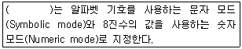
- chgrp
- cron
- cd
- chmod
(정답률: 84%)

2. 파일의 허가권이 다음과 같다. 사용자는 읽기, 쓰기, 실행 권한을 부여하고, 그룹과 다른 사용자는 읽기와 쓰기 권한만 설정하려고 할 때 알맞은 것은?
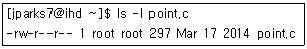
- chmod 755 point.c
- chmod u=rwx,go=rw point.c
- chmod 577 point.c
- chmod u+rwx,g+x,o+rx point.c
(정답률: 70%)
3. 다음 중 a.out 파일에 Set-UID를 설정하려고 할 때 ( 괄호 ) 안에 들어갈 내용으로 알맞은 것은?
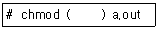
- o+t
- g+t
- o+s
- u+s
(정답률: 77%)
4. 다음 설명에 해당하는 특수권한으로 알맞은 것은?
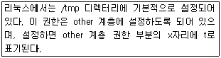
- Set-UID
- Set-GID
- Sticky-Bit
- Set-OID
(정답률: 81%)
5. 다음 파일에 대한 설명으로 틀린 것은?
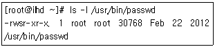
- 사용자 소유권과 그룹 소유권 모두 root이다.
- Set-UID가 설정되어 있다.
- 일반 사용자가 passwd 명령을 실행하는 동안에는 root의 권한으로 인정받지 못한다.
- passwd 파일의 권한은 4755로 설정되어 있다.
(정답률: 68%)
6. 다음 중 /etc/fstab에 명시된 파일 시스템을 마운트 할 때 사용하는 옵션으로 알맞은 것은?
- -a
- -t
- -o
- -h
(정답률: 44%)
7. 다음 ( 괄호 ) 안에 들어갈 내용으로 알맞은 것은?
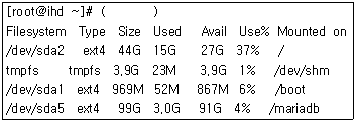
- df –i
- df -h
- df –hT
- df –m
(정답률: 68%)
8. 다음 조건으로 디스크 쿼터의 유예 기간을 설정하려 할 때 알맞은 것은?
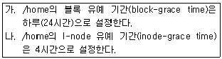
- setquota -t 86400 14400 /home
- setquota -t 14400 86400 /home
- setquota -u 14400 86400 /home
- setquota -u 86400 14400 /home
(정답률: 69%)
9. 다음 중 /etc/fstab에서 해당 파티션을 읽기 전용(read-only)으로 설정할 때 가장 연관이 있는 필드는 몇 번째인가?
- 1번째
- 2번째
- 3번째
- 4번째
(정답률: 57%)
10. 다음 중 edquota 명령으로 특정 사용자의 쿼터를 다른 사용자에게 동일한 설정으로 적용할 때 사용 하는 옵션으로 알맞은 것은?
- -u
- -g
- -t
- -p
(정답률: 62%)
11. 다음 중 시스템에 로그인한 후 사용 중인 셸을 확인하려고 할 때 사용하는 명령으로 알맞은 것은?
- echo $SHELL
- csh
- /bin/bash
- chsh
(정답률: 83%)
12. 다음 ( 괄호 ) 안에 들어갈 내용으로 알맞은 것은?
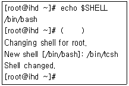
- csh
- cat /etc/shells
- chsh –hl
- chsh
(정답률: 73%)
13. 다음 중 bash shell에서 실행 파일을 찾는 디렉터리 경로를 나타내는 환경 변수로 알맞은 것은?
- HOME
- PATH
- PWD
- TERM
(정답률: 74%)
14. history 목록의 번호 중에서 7번에 해당하는 명령을 실행하기 위한 방법으로 알맞은 것은?
- !!
- 7!
- history 7
- !7
(정답률: 71%)
15. 다음 중 history에 대한 설명으로 틀린 것은?
- 사용자가 입력한 명령어를 확인하는 명령으로 ‘!’로 대체하여 사용할 수 있다.
- 사용자들이 실행한 명령들은 사용자 홈 디렉터리 안에 .bash_history 파일에 기록한다.
- 로그아웃할 때 메모리에 기억된 명령의 목록을 파일에 저장한다.
- 가장 마지막에 실행한 명령을 재실행할 수 없다.
(정답률: 81%)
16. 다음 ( 괄호 ) 안에 들어갈 내용으로 알맞은 것은?
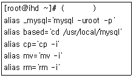
- alias
- unalias
- set
- unset
(정답률: 83%)
17. 다음 중 bash에서 개인 사용자가 로그아웃할 때 수행하는 설정을 지정하는 파일로 알맞은 것은?
- /etc/profile
- /etc/bashrc
- ~/.bash_logout
- /etc/shells
(정답률: 73%)
18. 다음 중 PATH 설정 값에 /usr/local/mariadb/bin 경로를 추가하려고 할 때 알맞은 것은?
- export PATH=/usr/local/mariadb/bin
- export PATH=PATH:/usr/local/mariadb/bin
- export PATH=$PATH:/usr/local/mariadb/bin
- export $PATH=PATH:/usr/local/mariadb/bin
(정답률: 79%)
19. 다음에서 설명하는 데몬 실행 방식으로 알맞은 것은?
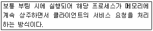
- standalone
- init
- inet
- xinetd
(정답률: 65%)
20. 다음 중 top 실행상태에서 메모리 관련된 항목을 on/off 하는 명령으로 알맞은 것은?
- k
- n
- m
- M
(정답률: 63%)
21. 포어그라운드로 실행 중인 프로세스를 백그라운드로 전환하기 위해 사용하는 키 조합으로 알맞은 것은?
- [CTRL] + [S]
- [CTRL] + [X]
- [CTRL] + [C]
- [CTRL] + [Z]
(정답률: 78%)
22. 다음 중 /opt/src 디렉터리를 source.tar로 압축 할 때 사용자가 로그아웃되거나 실행 중인 프로세스의 터미널이 닫혀도 계속 작업을 수행 하는 방법으로 알맞은 것은?
- nohup tar cvf source.tar /opt/src &
- nohup tar xvf source.tar /opt/src &
- nohup tar cvf source.tar /opt/src
- nohup tar xvf source.tar /opt/src
(정답률: 67%)
23. 다음 중 월요일부터 금요일까지 오후 12시에 /etc/check.sh 스크립트를 실행하기 위한 crontab 설정으로 알맞은 것은?
- 1-5 12 1 * * /etc/check.sh
- 0 12 * * * /etc/check.sh
- 0 12 * * 1-5 /etc/check.sh
- 1-5 1 12 * * /etc/check.sh
(정답률: 84%)
24. pstree 명령어를 다음과 같이 사용 하였을 때 ( 괄호 )안에 알맞은 것은?
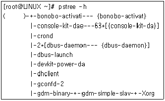
- init
- kernel
- system
- linux
(정답률: 71%)
25. 다음 중 멀티태스킹 작업을 위해 포어그라운드 프로세스 뒤에 붙여 실행하는 특수 기호로 알맞은 것은?
- &&
- %
- $
- &
(정답률: 66%)
26. 다음 중 시그널의 번호와 이름이 알맞게 연결된 것은?
- 2 - SIGHUP
- 9 - SIGKILL
- 15 - SIGCONT
- 20 –SIGSTOP
(정답률: 79%)
27. 다음 중 PPID를 확인 할 수 있는 명령어로 알맞은 것은?
- ps -l
- ps ef
- ps aux
- ps exf
(정답률: 54%)
28. 다음 중 top 명령 실행 시 확인 할 수 없는 것은?
- 디스크 사용량
- 메모리 상태
- CPU 상태
- 부하 상태
(정답률: 64%)
29. 다음 중 vi 편집기와 호환되면서 독자적으로 다양한 기능을 추가하여 만든 편집기로 알맞은 것은?
- vin
- emacs
- picon
- vim
(정답률: 79%)
30. vi 편집기에서 파일 안의 모든 내용을 지우기 위한 ex 명령모드에서의 조합으로 알맞은 것은?
- :$d
- :%d
- :d%
- :d$
(정답률: 58%)
31. 다음에서 설명하는 편집기로 알맞은 것은?
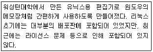
- vim
- emacs
- gvim
- pico
(정답률: 73%)
32. 다음 중 “vi +15 index.html”과 동일한 명령으로 알맞은 것은?
- vi –ic 15 index.html
- vi –ir 15 index.html
- vi –iR 15 index.html
- vi –il 15 index.html
(정답률: 44%)
33. 다음 중 vi 편집기에서 “windows”란 문자열을 모두 “linux”라는 문자열로 치환하기 위해서 사용되는 ex모드 명령어로 알맞은 것은?
- :s/windows/linux/
- :s/windows/linux/g
- :%s/windows/linux/g
- :$s/windows/linux/g
(정답률: 62%)
34. vi 편집기에서 uz라는 문자를 입력 시 uzoogom이라는 문자열로 자동으로 치환하고 싶을 때, “.exrc”파일에 추가해야 할 항목으로 알맞은 것은?
- set uz uzoogom
- map uz uzoogom
- ai uz uzoogom
- ab uz uzoogom
(정답률: 44%)
35. 다음 중 httpd-2.2.15-39.el6.x86_64.rpm 파일에 대한 설명으로 틀린 것은?
- httpd： 패키지 이름
- 2.2.15 : 버전
- 39: 릴리즈 버전
- x86_64 :Itanium 아키텍처
(정답률: 62%)
36. DOS/Windows 계열 운영체제에서 많이 사용되던 압축 프로그램으로 리눅스에서도 기본적으로 사용 가능한 압축프로그램으로 알맞은 것은?
- rar
- zip
- arj
- 7z
(정답률: 80%)
37. 다음 중 레드햇 계열 시스템에서 설치되어 있는 전체 패키지를 업데이트할 때 사용하는 명령으로 알맞은 것은?
- yum install
- yum update
- apt-get update
- apt-get upgrade
(정답률: 70%)
38. 다음 중 ‘apt-get clean’ 명령으로 제거되는 패키지 파일이 위치하는 디렉터리로 알맞은 것은?
- /var/cache/apt/archive
- /var/cache/archive
- /etc/yum.repos.d/
- /etc/yum/vars/
(정답률: 65%)
39. 다음 중 레드햇 계열 리눅스에서 현재 설치된 패키지의 그룹별 정보를 얻고 싶을 때 사용하는 명령으로 알맞은 것은?
- yum grouplist
- yum groupinfo
- yum search
- yum list
(정답률: 42%)
40. 다음 중 tar 옵션에 대한 설명으로 틀린 것은?
- -Z : compress 관련 옵션으로 예전 UNIX 계열 표준 압축 파일인 tar.Z에 사용한다.
- -z : gzip 관련 옵션으로 압축 파일인 tar.gz에 사용한다.
- -j : bzip2 관련 옵션으로 압축 파일인 tar.bz2에 사용한다.
- -J : jz 관련 옵션으로 압축 파일인 tar.jz에 사용한다.
(정답률: 61%)
41. 다음 중 rpm 검증 코드에 대한 설명으로 알맞은 것은?
- S : 파일 모드(Permission & File Type) 변경
- T : 권한(Capability) 변경
- . : 테스트를 수행하지 못했을 경우(예를 들면 허가권 거부 등)
- G : 그룹 소유권 변경
(정답률: 60%)
42. yum을 통하여 패키지 업데이트 중에 아래의 오류가 발생하였다. 다음 중 해결 방법으로 알맞은 것은?
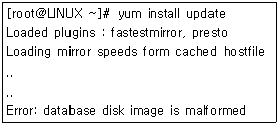
- yum update databases
- yum check-update
- yum clean all
- yum make cache
(정답률: 48%)
43. 다음 중 CUPS에서 프린터 큐 관련 환경 설정 파일로 lpadmin 명령을 이용하거나 웹을 통해 제어할 수 있는 파일로 알맞은 것은?
- /etc/cups/cupsd.conf
- /etc/cups/printers.conf
- /etc/cups/classes.conf
- cupsd
(정답률: 64%)
44. 다음 중 LPRng에 대한 설명으로 틀린 것은?
- 버클리 프린팅 시스템으로 BSD계열 유닉스에서 사용하기 위해 개발되었다.
- 설정한 정보는 /etc/printcap 파일에 저장되었다.
- RFC 1279로 정의되어 있다.
- 관련 사이트는 http://www.lprng.org이다.
(정답률: 55%)
45. 다음 ( 괄호 )에 해당하는 설명으로 알맞은 것은?
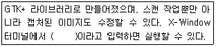
- OSS
- SANE
- xsane
- ALSA
(정답률: 72%)
46. 다음 중 lprm 명령으로 현재 사용자가 수행한 인쇄 작업을 모두 취소할 때 사용하는 명령어로 알맞은 것은?
- lprm -
- lprm +
- lprm –pP
- lprm –pU
(정답률: 57%)
47. 다음 중 오디오 CD에서 음악 파일을 추출할 때 사용하는 명령으로 알맞은 것은?
- alsamixer
- cdparanoia
- xcam
- scan
(정답률: 70%)
48. 다음 중 USB 및 SCSI 스캐너와 관련 장치 파일을 찾아주는 명령으로 알맞은 것은?
- alsactl
- scanner-find
- sane-find-scanner
- scan-find
(정답률: 75%)
2과목: 리눅스 활용
49. 다음 X 윈도의 구성 요소 중에 사용자 로그인 및 세션 관리 역할을 수행하는 것으로 알맞은 것은?
- 윈도 매니저
- 디스플레이 매니저
- 데스크톱 환경
- 사용자 인터페이스
(정답률: 53%)
50. 다음 설명하는 내용으로 알맞은 것은?
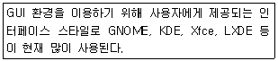
- 디스플레이 매니저
- X 라이브러리
- 데스크톱 환경
- 윈도 매니저
(정답률: 54%)
51. 다음 제시된 X 관련 라이브러리 중에 가장 저수준의 라이브러리로 알맞은 것은?
- Xlib
- XCB
- GTK+
- Qt
(정답률: 67%)
52. 다음 설명하는 내용으로 알맞은 것은?
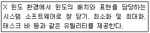
- 디스플레이 매니저
- 유저 인터페이스
- 데스크톱 환경
- 윈도 매니저
(정답률: 51%)
53. 다음 이미지 뷰어 프로그램인 ImageMagick를 실행하기 위해 X 윈도의 터미널 창에 입력해야할 명령으로 알맞은 것은?
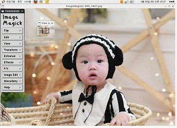
- evince
- Okular
- eog
- display
(정답률: 45%)
54. 다음 중 사용자가 X 윈도 실행 시에 관련 키정보를 저장하는 파일로 알맞은 것은?
- .Xsession
- .Xauthority
- .xinitrc
- .Xsetup
(정답률: 68%)
55. 다음 ( 괄호 ) 안에 들어갈 내용으로 알맞은 것은?
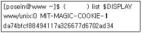
- xhost
- xauth
- echo
- cat
(정답률: 59%)
56. 다음 중 그래픽이나 로고 디자인, 사진 편집, 이미지 합성, 이미지 포맷 변환 등을 할 때 가장 유용할 프로그램으로 알맞은 것은?
- evince
- gimp
- ImageMagick
- eog
(정답률: 50%)
57. 다음 중 IPv4 및 IPv6의 특징 비교에 대한 설명으로 틀린 것은?
- IPv6에서는 임의의 큰 크기로 패킷을 주고받을 수 있다.
- IPv6의 헤더는 IPv4의 헤더와 비교해서 구조가 단순하다.
- IPv6에서 사용하는 주소는 A~E 클래스로 나누어져 있다.
- IPv6 기반의 호스트는 IPv6 네트워크에 접속하는 순간에 주소를 할당받는다.
(정답률: 61%)
58. 다음 중 DNS의 등장과 가장 밀접한 연관이 있는 파일로 알맞은 것은?
- /etc/host.conf
- /etc/hosts
- /etc/services
- /etc/protocols
(정답률: 55%)
59. 다음 중 OSI 모델의 응용 계층과 밀접한 관계가 있는 프로토콜로 알맞은 것은?
- Ethernet
- TCP
- NFS
- ICMP
(정답률: 56%)
60. 다음에서 설명하는 프로토콜로 알맞은 것은?
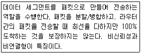
- ARP
- ICMP
- IP
- TCP
(정답률: 55%)
61. 다음 중 OSI 모델 기준으로 가장 많은 계층을 지원하는 장치로 알맞은 것은?
- 허브(HUB)
- 리피터(Repeater)
- 라우터(Router)
- 브릿지(Bridge)
(정답률: 72%)
62. 다음 중 SSH(Secure Shell) 프로토콜의 포트 번호로 알맞은 것은?
- 21
- 22
- 23
- 25
(정답률: 69%)
63. 다음 중 UTP 케이블 카테고리(Category) 5의 전송 속도로 가장 알맞은 것은?
- 10Mbps
- 16Mbps
- 100Mbps
- 1000Mbps
(정답률: 70%)
64. 다음 ( 괄호 ) 안에 들어갈 내용으로 알맞은 것은?
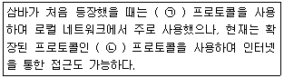
- (ㄱ) SMB (ㄴ) NFS
- (ㄱ) SMB (ㄴ) CIFS
- (ㄱ) NFS (ㄴ) SMB
- (ㄱ) NFS (ㄴ) CIFS
(정답률: 61%)
65. 다음 중 ssh 기반으로 원격 복사를 하려고 할 때 사용하는 명령으로 가장 알맞은 것은?
- rcp
- rsync
- scopy
- scp
(정답률: 53%)
66. 다음에서 설명하는 웹 브라우저로 알맞은 것은?
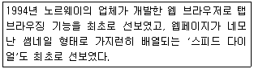
- Chrome
- Firefox
- Opera
- Safari
(정답률: 65%)
67. 다음에서 설명하는 내용과 가장 관련 있는 프로토콜로 알맞은 것은?
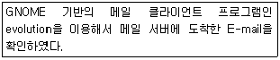
- HTTP
- SMTP
- FTP
- IMAP
(정답률: 50%)
68. 다음 중 파일 공유 관련 인터넷 서비스와 가장 거리가 먼 것은?
- FTP
- SAMBA
- gopher
- NFS
(정답률: 69%)
69. 다음 중 FTP 서버에 접속하여 원격지의 파일 이름을 변경할 때 사용하는 명령으로 알맞은 것은?
- mv
- rename
- passive
- bi
(정답률: 69%)
70. 다음 조건 일 때 생성되는 서브네트워크의 개수로 알맞은 것은?
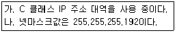
- 4
- 64
- 128
- 192
(정답률: 54%)
71. 다음 실행 결과에 해당하는 명령어로 알맞은 것은?
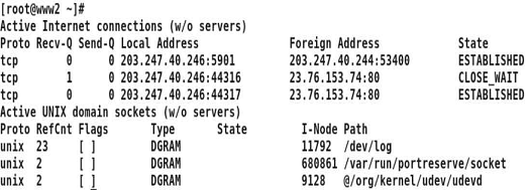
- route
- mii-tool
- netstat
- ethtool
(정답률: 55%)
72. 다음 중 게이트웨이 주소값을 설정하는 명령으로 알맞은 것은?
- route add default –gw 192.168.5.1
- route add default gw 192.168.5.1
- route add –net 192.168.5.1
- route add net 192.168.5.1
(정답률: 59%)
73. 다음 중 네트워크 인터페이스의 물리적 연결 여부를 확인할 수 있는 명령어로 가장 알맞은 것은?
- ifconfig
- arp
- mii-tool
- netstat
(정답률: 48%)
74. 다음 중 같은 네트워크 대역에 속한 특정 호스트의 MAC 주소를 조회하려고 할 때 사용하는 명령어로 알맞은 것은?
- ifconfig
- arp
- mii-tool
- netstat
(정답률: 57%)
75. 다음과 같은 경우에 사용하면 유용한 파일로 알맞은 것은?
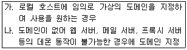
- /etc/sysconfig/network
- /etc/host.conf
- /etc/resolv.conf
- /etc/hosts
(정답률: 34%)
76. 다음 중 기본 서브넷마스크 값을 갖는 B 클래스의 호스트 IP 주소 개수로 알맞은 것은?
- 128
- 256
- 65,536
- 16,777,216
(정답률: 72%)
77. 다음 그림과 가장 관계가 깊은 클러스터링 기술로 알맞은 것은?
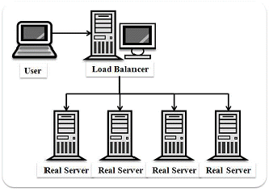
- 고계산용 클러스터
- 부하분산 클러스터
- 고가용성 클러스터
- 임베디드 클러스터
(정답률: 72%)
78. 다음 중 임베디드 리눅스의 단점으로 알맞은 것은?
- 별도의 로열티나 라이선스 비용을 지불해야 한다.
- 변경 및 재배포가 쉽지 않다.
- 디바이스 드라이버 프레임워크가 단순하다.
- 사용자 모드와 커널 모드 메모리 접근이 복잡하다.
(정답률: 57%)
79. 다음 설명하는 내용으로 알맞은 것은?
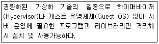
- XEN
- KVM
- Docker
- Hyper-V
(정답률: 44%)
80. 다음 빅데이터 관련 기술 중 파일 시스템과 같이 인프라 구축과 가장 관계가 깊은 기술로 알맞은 것은?
- R
- Hadoop
- NoSQL
- Cassandra
(정답률: 62%)